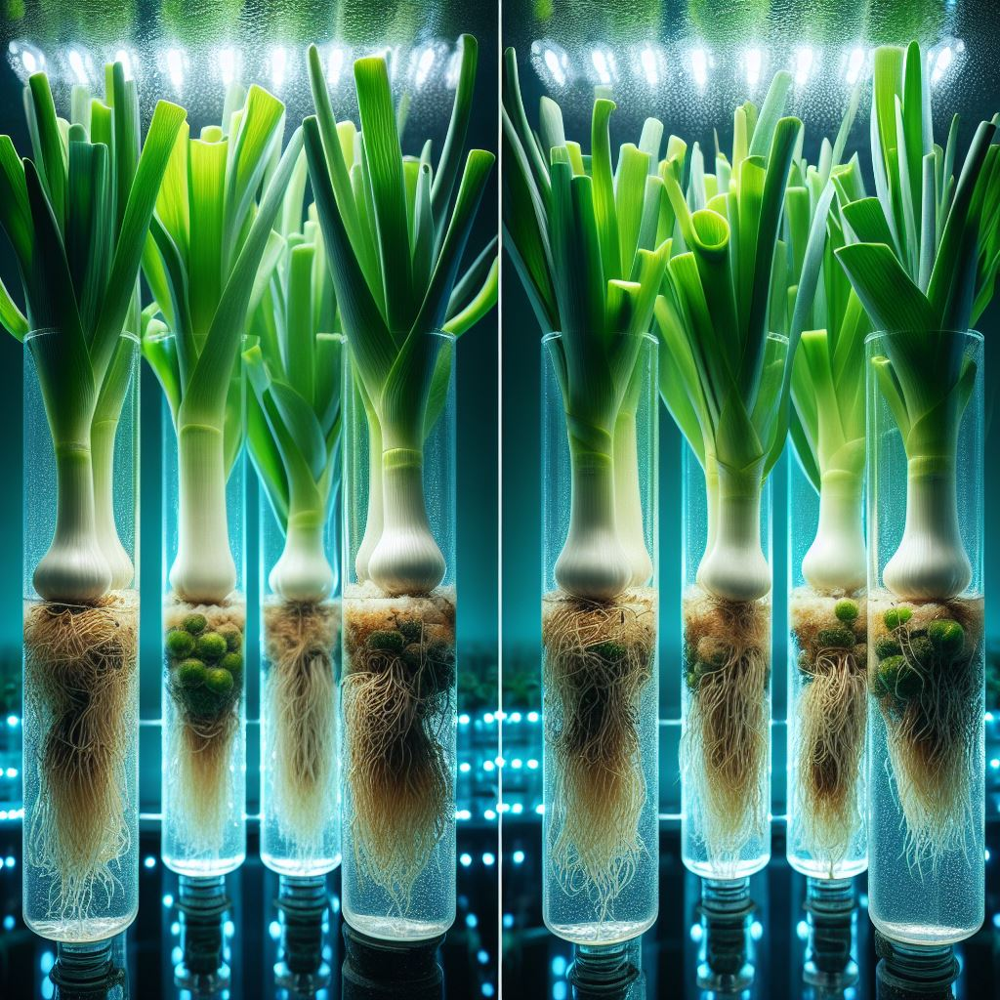

Daun Bawang Hidroponik
Alat dan Bahan
- Wadah atau pot tanaman.
- Sumur untuk air nutrisi (reservoir).
- Sumur untuk media tanam.
- Wick (sumbu kapas atau tali kapiler).
- Nutrisi Hidroponik
- Media Tanam (coco coir, serat kelapa, vermikulit).
- Benih atau Bibit Tanaman.
Langkah Budidaya
- Persiapkan wadah atau pot dengan membuat lubang drainase di bagian bawah.
- Pasang sumur air nutrisi di bawah atau di samping wadah tanaman.
- Isi sumur tanaman dengan media tanam seperti coco coir atau serat kelapa.
- Pasang wick dengan satu ujung di dalam sumur air nutrisi dan ujung lainnya di dalam sumur media tanam.
- Tanam benih atau bibit tanaman di atas media tanam di wadah atau pot.
- Monitor dan tambahkan air nutrisi jika perlu.
- Pastikan media tanam selalu lembab dan nutrisi tersedia.
- Pantau pertumbuhan tanaman dan lakukan perawatan seperti yang diperlukan.